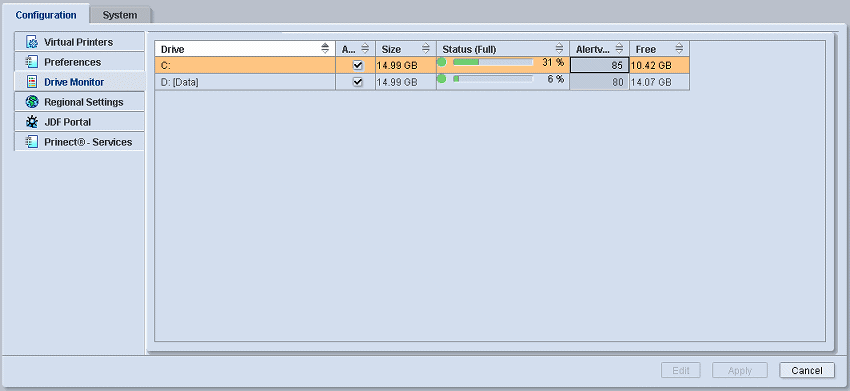

You can configure the drive monitor in "Administration > Configuration > Drive Monitor".
The drive monitor monitors the hard disk capacity of the local drives of the Prinect Shooter PC.
If a hard disk in the Prinect Shooter system is "full", this can bring the Prinect Shooter software to a complete standstill or cause an uncontrollable state. It is therefore important to ensure that space is freed in time on a drive which is too heavily loaded. In particular the drives with spool folders always have to have a certain amount of free memory in reserve.
Local hard disks or partitions (e.g. disk on which the spool directory is located) are monitored by the drive monitor to make sure this reserve is there. When a defined level (warning) is exceeded, no other options that require hard disk memory are started by Prinect Shooter. Virtual printers, whose spool directories are in a partition which is in an "Alert" status (alert value was exceeded) are switched to the "Pause" status. A message in the status panel of the Prinect Shooter user interface points this out to you.
When sufficient space is once again available, after jobs have been processed or files which are no longer required have been manually deleted, all of these measures will be automatically canceled. Processes in progress, however, are not stopped, so that an overflow cannot be prevented in all cases.
The bar graph "Status (full)" can assume the following colors:
Everything is ok, the drive has sufficient space free.
The status of the drive is critical, make more space available! The transition from green to yellow takes place at the alert value -5%.
The alert value is exceeded. The virtual printers were paused. The virtual printers can only resume their work when sufficient space has been freed on the drive.
Please observe the notes below when working with the drive monitor:
All the virtual printers are stopped, this means no further jobs can be sent to the virtual printers, if the alert value set for one of the drives required by the virtual printer was exceeded (warning function activated). The virtual printers cannot be re-started manually.
To configure the drive monitor, click "Edit". The configuration view is opened:

To activate the monitoring of the single drives on the Prinect Shooter PC, click the respective check box in the "Activate" column. In the "Alertvalue" column, you can define at which percentage of the drive capacity monitoring will be activated. A value of 80% is preset.
By clicking on the "Apply" button, the settings are activated and the configuration view is closed.
Copyright © 2013 Heidelberger Druckmaschinen AG